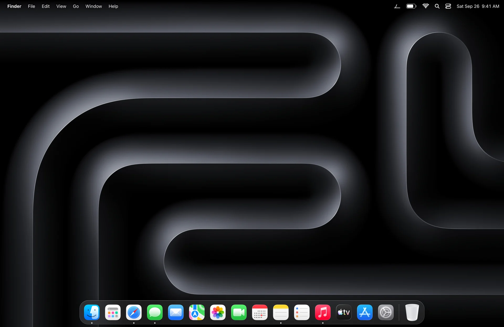
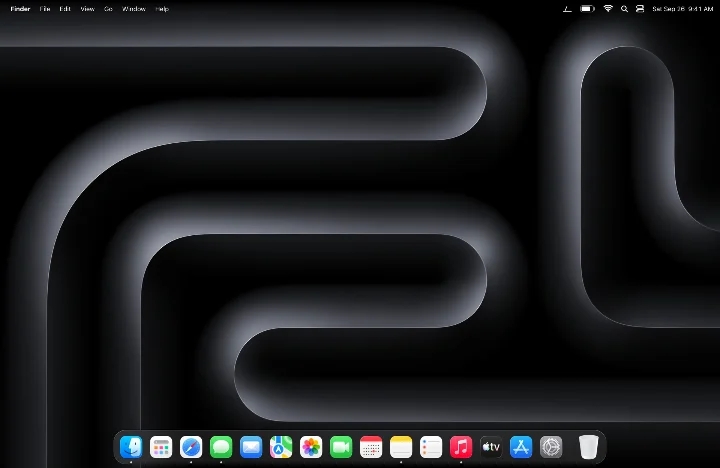
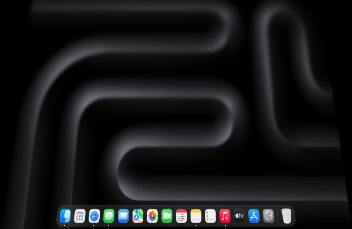
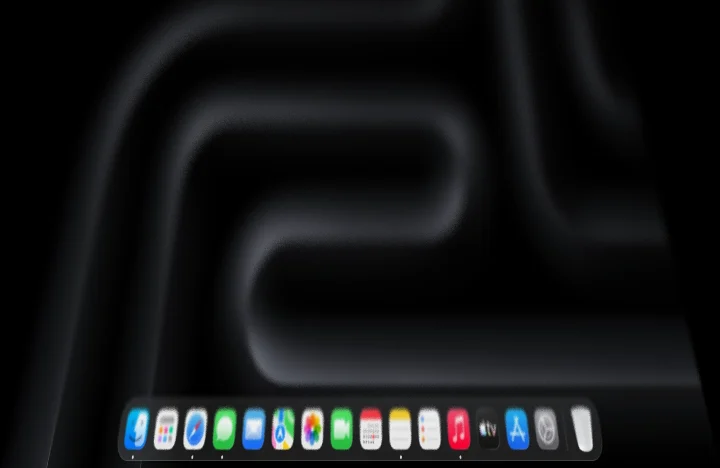
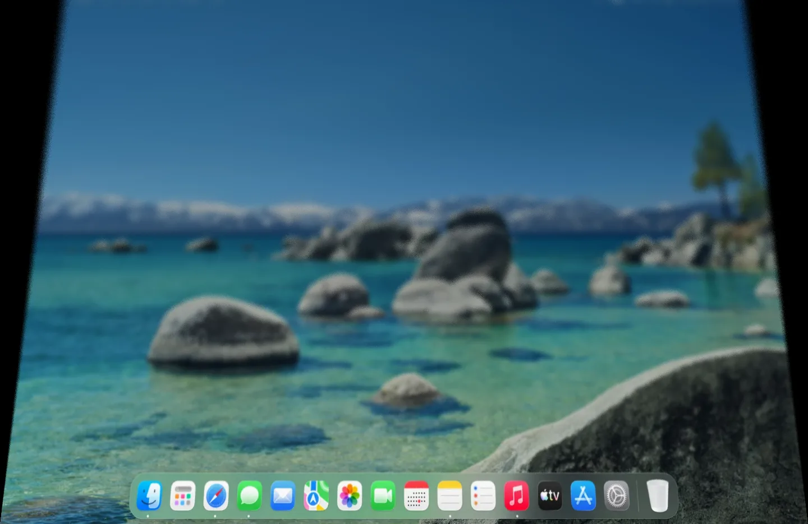
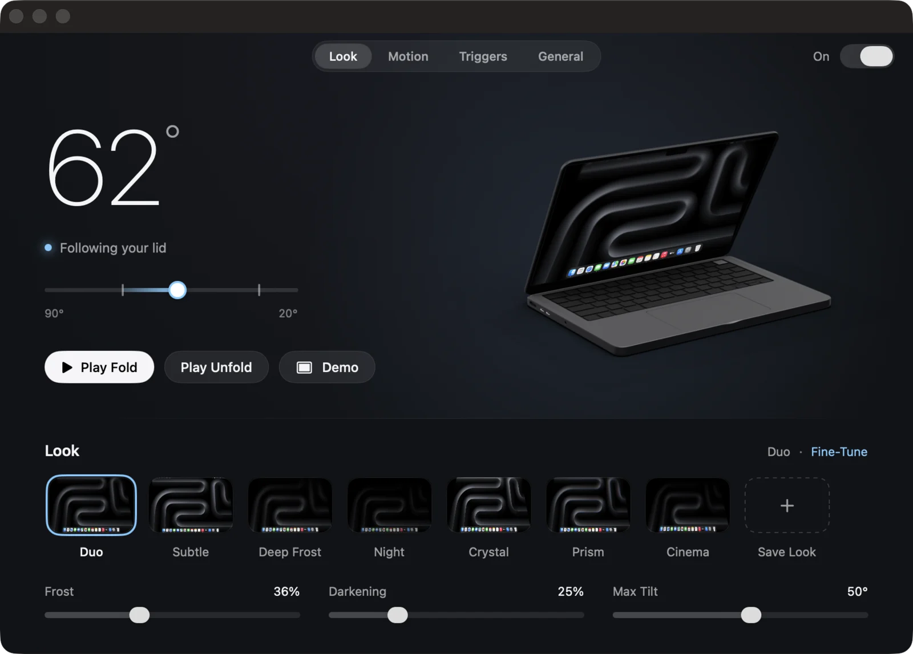
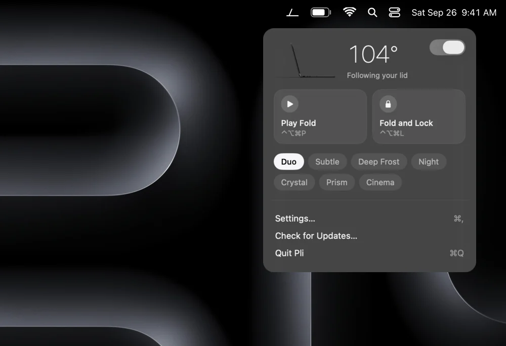
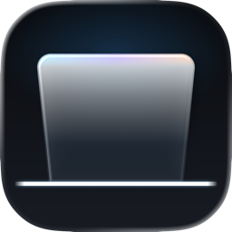

Pli
The iPhone Duo fold, on your MacBook.

Close the lid and your desktop turns to frosted glass, swinging on the hinge while the picture stays still. Open it, and everything unfolds.
- Free and open source
- Public preview 0.9
- macOS 26 or later
- 16 MB of memory at rest
How it works
Your lid drives the glass.
Pli reads the real angle of your screen, many times a second. Your desktop stays exactly where it is; a pane of glass swings over it with the lid, and the farther it leans, the more frosted it gets.
-

90°Start closing
Past 90°, a clear pane of glass appears over your desktop, still sharp.
-

55°The glass leans
It tilts on the hinge while the picture stays still, and frost rises from the bottom.
-

30°Fully frosted
Near the end, the glass darkens to black. Open the lid and it all unfolds, the same way back.
Looks
Seven looks. Or your own.
Start from the one faithful to the iPhone Duo, or pick a lighter, darker or more iridescent glass. Every setting can be tuned, saved and shared as a file.

Duo: faithful to the iPhone Duo.
The app
Simple on the surface. Deep when you want it.
One dark window with your lid's angle in large numerals and a MacBook that moves with yours. Three sliders up front; everything else one click away.


On the lock screen
Close the lid on your desktop, open it on the lock screen: it unfolds there too, with your wallpaper.
Animated lock
Press ⌃⌥⌘L and your Mac folds itself, then locks.
A demo on demand
Press ⌃⌥⌘P to watch a full fold without touching the lid. Handy on a desk.
No false starts
Pli learns where your screen rests and ignores the small moves of typing or carrying.
Your Mac's own look
Follows Reduce Motion, lightens itself in Low Power Mode, and never touches an external display.
Share a look
Save your settings as a .pli file and send it to a friend. One double click installs it.
Your Mac
Light on your Mac. Clear about which ones.
Pli sleeps when your lid does nothing. It wakes for the second a fold takes, then gives everything back.
16MB
Memory at rest
What Pli uses while it waits: less than a browser tab.
~100MB
During a fold
The picture of your desktop, on the graphics chip. Freed one second after the lid stops.
<0.5%
Of one core at rest
Reading the lid ten times a second. No timer runs otherwise.
2ms
Per frame, at most
The glass is drawn on the GPU at 120 Hz, and lighter on battery saver.
Measured on a 14-inch MacBook Pro (M3 Pro), macOS 26.5. The settings window shows the live figure for your Mac.
Folds with your lid
MacBooks with a lid angle sensor, running macOS 26.
- MacBook Pro 14 inch (M3 Pro)Tested
- Other MacBook Pro 14 and 16 inch with Apple siliconExpected
- MacBook Air 13 and 15 inch, M2 and laterExpected
- MacBook Pro 16 inch (2019, Intel)Has the sensor, untested
Shortcuts only
No lid sensor Pli can read: the demo, the animated lock and the unlock reveal still work.
- MacBook Air (M1, 2020)Sensor not readable
- MacBook Pro 13 inch with Touch Bar (M1, M2)Sensor not readable
- iMac, Mac mini, Mac Studio, Mac ProNo lid
- Any MacBook closed on an external displayPauses
Privacy
Your screen stays yours.
To show your desktop through the glass, Pli takes one picture of it when the lid starts to close. That picture never leaves memory.
Never on disk
The picture lives on the graphics chip, is never saved, and is released a second after the fold.
No network, no tracking
No account, no analytics. The only connection Pli makes is to check for updates, and you can turn it off.
Open source
Every line is on GitHub under the MIT License, so you can read exactly what it does.
Questions
Why does Pli ask for Screen Recording?
To draw your desktop through the glass, Pli needs one picture of it at the start of each fold, and macOS only allows that with the Screen Recording permission. The picture stays in memory and is never recorded, saved or sent.
Without the permission, Pli still works in Basic mode: the glass frosts and darkens without the picture behind it.
How much memory and battery does it use?
About 16 MB while it waits, and about 100 MB more during a fold, for the second the glass is on screen. At rest it only reads the lid ten times a second, under half a percent of one core. On battery saver it draws a lighter glass.
The General page of the settings shows the memory Pli uses on your Mac, live.
Will it work on my Mac?
If your MacBook has a lid angle sensor Pli can read and runs macOS 26, the fold follows your lid. That covers recent MacBook Air and MacBook Pro models; see the list above. On other Macs, the demo, the animated lock and the unlock reveal still work with shortcuts. Pli tells you which case you are in as soon as it starts.
Does it use private macOS features?
Three, each in one clearly marked file: showing the unfold above the lock screen, locking at the end of the animated lock, and hiding the cursor during a fold. If a macOS update removes one, only that feature turns off. Nothing crashes.
What about external displays?
The effect plays on your MacBook's own screen only. External displays are never touched, and when the MacBook is closed on an external display, Pli pauses.
How do I remove it?
Quit Pli from its menu and move it to the Trash. Its settings are in one preferences file and one folder of looks, both removed by any app cleaner.
Is Pli made by Apple?
No. Pli is an independent open source project, not affiliated with Apple. iPhone and MacBook are trademarks of Apple Inc.

Fold the light.
Free, open source, and ready in a minute. This is the public preview; 1.0 arrives on October 15, through the app itself.
macOS 26 or later Apple silicon and Intel Notarized by Apple. Updates arrive through the app, when you allow them.
Or install it with Homebrew: brew install --cask ruben4reall/tap/pli